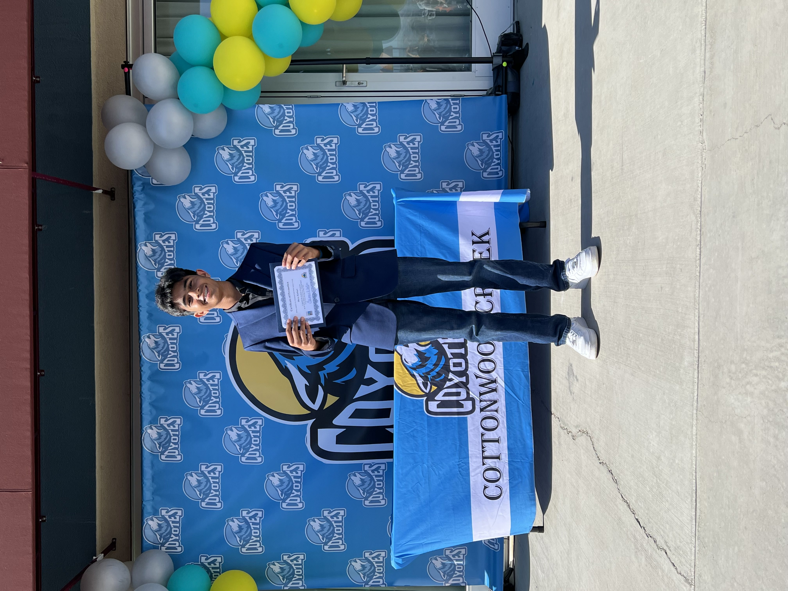

|  | |
| Name: | Dhruv Kothari |
|---|---|
| Location: | Dublin, CA |
| Email: | reachdhruv5@gmail.com |
Hello, my name is Dhruv Kothari. I'm currently a freshman in high school with an interest in being an engineer in the aerospace field. I plan on achieving this goal by taking high school and college courses which deepen my understanding of things that apply to aerospace. For example, computer science is a vital aspect of not just aerospace, but engineering in general. The reason I choose to pursue aerospace is because it involves my love of two things; coding and space. From a young age, I have always loved learning about the wonders of space. As I've grown up, I've discovered how I can make almost anything using code.
Due to the career I want to do being Aerospace Engineering, there are various different personality traits that I possess which relate and could help me in this career. One of the most important personality traits I possess is persistence. During the 2021 Summer, I participated in a coding competition called Zero Robotics. In this competition, teams compete and program satellites aboard the ISS (International Space Station) to complete specific tasks. These solutions are usually meant to be used on the ISS. Figuring out the most optimal solution to the problem given took me very long and at times, I would feel like giving up. But, I pushed through and found a great solution. The amount of time and persistence I spent on this competition won me first place! This really displayed to me how much persistence I have and the things I'm ready to do to succeed. In Aerospace Engineering, there are many problems to overcome and many of them cannot be solved quickly. Therefore, persistence is a great trait to possess as you need to be able to keep on trying even when a problem takes long to solve.
As I am currently a freshman in high school, I do not have much experience with high school. But, I have tried various different things in the time that I've been here. One of the more important things I am currently trying is chartering a club. I've noticed that being a leader means making sacrifices and taking responsibility for almost everything. However, I feel it's a great learning opportunity and also a great way to prepare me for the workforce since I'll need these skills. Another activity I am trying out is being part of a sports team for my school; more specifically, the school soccer team. Through these activities, I've come to realize that I tend to devalue things or not feel like doing them even if I've never tried it. For example, when I was thinking about trying out for the school soccer team, I felt hesitant to do it because I was afraid that I was going to be the worst on the team. But, I decided to make a leap of faith and just try out. Two weeks later, I found out that I made the team! I realized that sometimes, you just need to try things and it's OK to fail.